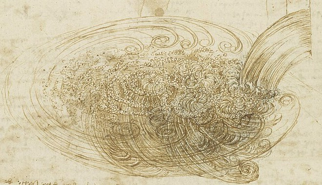
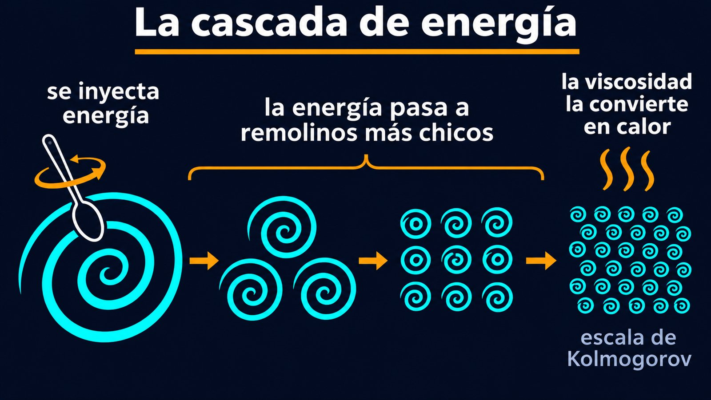

La energía entra por los remolinos grandes y sale por los chicos
Revolvé un balde de agua con un palo: armás un remolino grande. Si mirás de cerca, ese remolino está lleno de remolinos más chicos, y esos, de otros todavía más chicos. Al rato, el agua se aquieta y se calentó apenas. ¿A dónde fue la energía del palo? Pasó, de remolino en remolino, de los grandes a los chicos, hasta convertirse en calor. Esa escalera es la cascada de energía de la turbulencia.
David Tong, de la Universidad de Cambridge, abre el tema con un verso de Lewis Fry Richardson [1]:
Según Tong, las ideas sobre qué pasa con la energía en un flujo turbulento se deben a Richardson, Taylor y Kolmogorov, y culminaron en una serie de trabajos de Kolmogorov de 1941, que los especialistas llaman simplemente «K41» [1].

La turbulencia es muy disipativa: si se deja solo un fluido turbulento, vuelve rápido al reposo [1]. Su energía se pierde por la viscosidad, y la viscosidad disipa sobre todo donde la velocidad cambia muy rápido de un punto a otro: en las escalas más chicas [1]. Pero la energía se inyecta en las escalas grandes, las del palo o del obstáculo que genera la turbulencia [1]. Tong lo resume: la energía entra por la escala más grande y sale por la más chica [1].
¿Cómo baja? Los remolinos grandes se rompen en remolinos más chicos y les pasan su energía, que a su vez se rompen en otros más chicos [1]. Ese proceso, propuesto primero por Richardson, es la cascada de energía [1]. En el camino no se disipa nada: la viscosidad no interviene en la cascada; solo actúa al final [1].
La catarata de escalones: imaginá agua que cae por una escalera muy larga. Entra arriba, en el primer escalón, y va bajando de escalón en escalón sin perderse. Recién al final, en el último, se derrama y se pierde. Los escalones son los remolinos de tamaños cada vez menores; el último es la escala donde la viscosidad convierte el movimiento en calor.

¿Hasta dónde baja la cascada? Hasta que los remolinos son tan chicos que la viscosidad los frena. Tong deduce ese tamaño mínimo, la escala de Kolmogorov, y muestra que se puede obtener por análisis dimensional: es la única longitud que se puede armar con la tasa de disipación de energía y la viscosidad [1]:
Como en la turbulencia el número de Reynolds es muy grande, la escala de Kolmogorov es muchísimo más chica que la escala grande [1]. Con Re = 106, por ejemplo, es unas 30 000 veces más chica (un cálculo propio con la fórmula). Las escalas intermedias forman el rango inercial, donde la cascada no depende de la viscosidad [1].
En el rango inercial, la cascada tiene una regularidad sorprendente: es invariante de escala [1]. Tong muestra que la velocidad de un remolino de tamaño ℓ crece como ℓ1/3, y que la energía repartida entre los remolinos de distintos tamaños sigue una ley de potencia [1]:
Es el famoso espectro de Kolmogorov. Tong advierte que viene de un análisis dimensional sobre una imagen simplificada de la turbulencia [1]: es una predicción, y una de las más conocidas de la física de fluidos.
Por qué hace falta la cascada: Tong muestra que si la energía se disipara directamente en los remolinos grandes, la disipación sería demasiado chica, menor que la necesaria por un factor del orden del número de Reynolds [1]. Para disipar lo que entra, el flujo tiene que fabricar estructuras mucho más chicas, con cambios de velocidad mucho más bruscos [1]. Más sobre el fenómeno en general en la turbulencia.
En un flujo turbulento, la energía entra por los remolinos grandes, baja sin perderse de remolino en remolino, y se disipa en calor recién en los más chicos, del tamaño de la escala de Kolmogorov. Entre medio, la cascada es invariante de escala, y la energía se reparte según la ley k−5/3. El verso de Richardson resume, en cuatro líneas, una de las ideas más profundas de la mecánica de fluidos.
Pregunta para la comunidad: Según la fórmula ℓ0 ~ L / Re3/4, si duplicás la velocidad de un flujo turbulento sin cambiar su tamaño, ¿los remolinos más chicos se hacen más grandes o más chicos? ¿En cuánto?